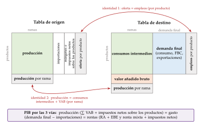
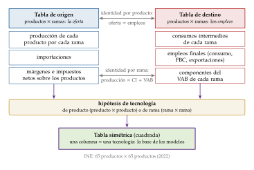
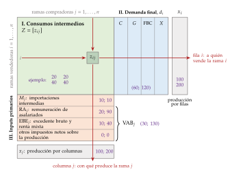
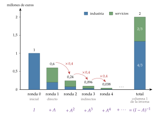
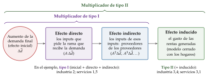
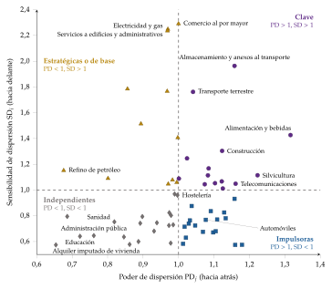

Tema 3.A.31
Análisis de las tablas «input-output».
Tablas de origen, destino y simétrica; coeficientes técnicos, modelo de Leontief de cantidades y de precios, multiplicadores, Rasmussen y cadenas de valor.
Exclusivo Material exclusivo de victorgutierrezmarcos.es y la app Oposición TCEE · DCE. Puedes usarlo libremente para tu estudio personal. No se autoriza su incorporación a otras plataformas, aplicaciones o servicios. Condiciones de uso.
Introducción
Enganche:
«Tirando del hilo se saca el ovillo», dice el refrán: basta encontrar una punta para llegar a todo lo demás.
En 2019 llegaron a España 83,5 millones de turistas internacionales; en 2020, con la pandemia, 18,9 millones; en 2025, un récord de 96,8 millones.
El golpe de 2020 no se quedó en los hoteles y los restaurantes. Llegó a las lavanderías industriales, a los agricultores que les vendían, a las empresas de limpieza y de transporte y, a través de los salarios perdidos, a las tiendas de todo el país. En 2025 el hilo tiró en sentido contrario.
Detrás está la pregunta de esta exposición: ¿hasta dónde llega un euro que se gasta, o que se deja de gastar, en una rama de la economía? Para responderla hace falta saber quién compra a quién, y eso es lo que registran las tablas input-output.
Relevancia:
Las tablas input-output son la única fuente estadística que muestra la economía por dentro: qué necesita cada rama de las demás y del exterior para producir.
Con un modelo sencillo construido sobre ellas se miden:
los efectos directos, indirectos e inducidos de un cambio de la demanda final (turismo, gasto público, exportaciones, fondos europeos) sobre lo que se produce, el empleo y lo que se importa;
la propagación a los precios de una subida de costes (energía, salarios, impuestos);
el comercio en valor añadido y las cadenas globales de valor, la huella de carbono y la dependencia de insumos importados [ver tema 3.B.18].
Son, además, la base de datos con la que se calibran los modelos de equilibrio general computable [ver tema 3.A.21], y el instrumento con el que los institutos de estadística cuadran la contabilidad nacional [ver tema 3.A.30].
Contextualización:
La idea de que todas las partes de una economía dependen unas de otras es antigua. François Quesnay, médico de la corte de Luis XV, representó en su Tableau économique de 1758 la circulación del producto entre las clases sociales, como la de la sangre por el cuerpo [ver tema 3.A.2].
Walras (1874) convirtió esa interdependencia en un sistema de ecuaciones simultáneas en el que se determinan a la vez todos los precios y todas las cantidades [ver tema 3.A.21].1
Wassily Leontief lo hizo medible. En 1936 publicó la primera tabla de la economía de Estados Unidos, para 1919, con 44 sectores, 41 de ellos productivos, y la presentó como un tableau économique empírico; en 1941 publicó el modelo que la usa.2
Para poder resolverlo con datos, Leontief simplificó a Walras: los inputs se usan en proporciones fijas, sin sustitución entre ellos [ver tema 3.A.11]. Su programa era llenar de hechos las «cajas vacías» de la teoría económica.3
La contabilidad nacional moderna nació a la vez, en los años 30 y 40, con Simon Kuznets en Estados Unidos y Richard Stone en el Reino Unido, impulsada por la macroeconomía de Keynes (1936) y por la economía de guerra [ver tema 3.A.30].4
Hoy las tablas forman parte de ese sistema como marco input-output: es el capítulo 9 del Sistema Europeo de Cuentas (SEC 2010), y en España las elabora el Instituto Nacional de Estadística (INE).
Dos definiciones de partida:
una tabla input-output es un registro contable de los flujos de bienes y servicios entre las ramas de una economía, y de estas con la demanda final y con los inputs primarios, en un periodo, normalmente un año;
una rama de actividad agrupa las unidades que hacen la misma actividad productiva, mientras que un sector institucional agrupa las que toman el mismo tipo de decisiones (hogares, sociedades, administraciones públicas). El lenguaje corriente llama «sectores» a las ramas; las tablas trabajan con ramas.
Problemática:
¿Cómo se registra quién produce qué y para quién?
¿Cuánto tiene que producir cada rama para atender una demanda final dada, y cómo se reparte entre las ramas una subida de costes?
¿Qué ramas tiran de la economía, y hasta dónde podemos fiarnos de las respuestas?
Estructura:
La exposición va de la contabilidad al modelo, y del modelo a sus límites; cada apartado responde a una de las 3 preguntas:
I. Descripción de las tablas (I): las tablas de origen y destino, la tabla simétrica y los coeficientes técnicos;
II. Aplicaciones del marco input-output (II): con coeficientes fijos, la tabla se convierte en el modelo de demanda y en su gemelo, el de precios; de ellos salen los eslabonamientos entre ramas y las aplicaciones de hoy;
III. Utilidad y limitaciones (III): para qué sirven hoy las tablas y de dónde vienen sus límites.
3.A.31. Análisis de las tablas input-output
Introducción2′30″
I. Descripción de las tablas input-output. El marco input-output en el sistema de cuentas nacionales7′
1. Tablas de origen y destino
2. La tabla input-output simétrica
3. Los coeficientes técnicos
II. Aplicaciones del marco input-output14′
1. Modelo de demanda
2. Modelo de precios
3. Otros estudios de interdependencia: los eslabonamientos interindustriales
4. La técnica input-output en estudios de economía aplicada
III. Utilidad y limitaciones de las tablas input-output5′30″
1. Utilidad de las tablas en la actualidad
2. Origen de algunas limitaciones
Conclusión1′
Reparto del cante: introducción, 2′30″; I, 7′ (I.1, 2′; I.2, 3′; I.3, 2′); II, 14′ (II.1, 6′; II.2, 3′; II.3, 3′; II.4, 2′); III, 5′30″ (III.1, 3′; III.2, 2′30″), y conclusión, 1′. Todo el tema sigue una misma economía de 2 ramas, industria y servicios (tabla 3): sus números permiten hacer cada cálculo a mano. El ejemplo completo y otro de 3 ramas están en el anexo B.
I. Descripción de las tablas input-output. El marco input-output en el sistema de cuentas nacionales
Conclusión anticipada: los datos llegan por ramas y por productos en las tablas de origen y destino; la tabla simétrica los reordena para que cada columna sea la tecnología de una rama y cada fila el destino de lo que produce. Dividiendo cada columna por la producción salen los coeficientes técnicos, la pieza con la que se construyen los modelos.
El marco input-output es la parte del sistema de cuentas que detalla la economía rama a rama y producto a producto. Reúne la producción, los consumos intermedios, el valor añadido y sus componentes, la oferta y la demanda de cada producto y las importaciones y exportaciones.
Se presenta de 2 formas:
Del SEC 95 al SCN 2025
Desde el SEC 95 no se habla de una tabla input-output aislada, sino de un marco: tablas de origen y destino, a precios básicos y de adquisición, con los flujos interiores y los importados por separado, y tablas simétricas.
El SEC 2010 dedica su capítulo 9 a ese marco: las tablas de origen y destino son su núcleo, y la simétrica se deriva de ellas con supuestos o datos adicionales. Es la versión europea del Sistema de Cuentas Nacionales (SCN) de 2008 de Naciones Unidas.
La última versión del sistema de Naciones Unidas es el SCN 2025, adoptado en marzo de 2025. Dedica a este marco 2 capítulos, el 15 (tablas de origen y destino) y el 36 (tablas input-output), que sustituye al antiguo capítulo 28 de análisis matriciales; los conceptos de las tablas no cambian. Mantiene el esquema y anima a ampliarlo con tablas de comercio en valor añadido y tablas digitales. Mientras la Unión Europea no apruebe el nuevo SEC, previsto para finales de la década, las cuentas españolas siguen el SEC 2010.
Los manuales de referencia para elaborar las tablas son el de Eurostat de 2008 y el de Naciones Unidas de 2018.
I.1. Tablas de origen y destino
Las unidades: las tablas de origen y destino se elaboran por ramas de actividad, que agrupan unidades de actividad económica locales (UAE locales: la parte de una empresa que, en un lugar, hace una actividad), clasificadas por la CNAE; los productos se clasifican por la CPA.
Las últimas del INE, de 2023, cruzan 110 productos con 81 ramas; en octubre de 2026 se publicó además un avance de 2024.
I.1.1. Tabla de origen
La tabla de origen recoge de dónde sale la oferta de cada producto: qué productos produce cada rama y cuánto se importa de cada uno (tabla 1).
Por filas van los productos y por columnas las ramas. No es cuadrada, porque hay más productos que ramas.
Una rama puede producir varios productos: la diagonal recoge su producción principal, y lo que queda fuera de ella son las producciones secundarias (la electricidad que genera una papelera).
De la producción a la oferta: la producción por productos más las importaciones da la oferta a precios básicos; añadiendo los impuestos netos sobre los productos y los márgenes de comercio y de transporte se llega a la oferta a precios de adquisición (figura 1).
El precio básico es lo que cobra el productor por unidad: no incluye los impuestos sobre los productos (IVA, impuestos especiales) y sí las subvenciones a los productos; incluye los otros impuestos netos sobre la producción, los que se pagan por producir y no por cada unidad vendida (el IBI de la fábrica, las tasas).
El precio de adquisición es lo que paga el comprador: el básico, más los márgenes de comercio y de transporte y los impuestos netos sobre los productos que el comprador no puede deducirse.
| Ramas (CNAE) |
Importaciones | Oferta a precios básicos | Márgenes e impuestos netos sobre los productos | Oferta a precios de adquisición | |
|---|---|---|---|---|---|
| Productos (CPA) |
producción de cada producto por cada rama | importaciones de cada producto | producción \(+\) importaciones | \(+\) márgenes \(+\) impuestos netos | recursos de cada producto |
| Total | producción de cada rama | importaciones totales | oferta total | recursos totales |
Fuente: elaboración propia a partir de Eurostat (2008) y Eurostat (2013, cap. 9).

Fuente: elaboración propia a partir de Eurostat (2013).
I.1.2. Tabla de destino
La tabla de destino muestra los empleos: en qué se usa cada producto, como consumo intermedio de cada rama o como demanda final, a precios de adquisición. Debajo, por columnas, el valor añadido bruto (VAB) de cada rama y sus componentes (tabla 2).
Se lee de 2 formas:
por filas, el destino de cada producto: cuánto va a cada rama y cuánto a la demanda final (consumo de los hogares y de las administraciones públicas, formación bruta de capital y exportaciones);
por columnas, la estructura de costes de cada rama: sus consumos intermedios y su valor añadido, que suman su producción.
Las 2 tablas juntas cumplen 2 identidades:
por ramas: producción \(=\) consumos intermedios \(+\) VAB;
por productos: oferta \(=\) empleos, es decir, producción \(+\) importaciones \(+\) márgenes \(+\) impuestos netos sobre los productos \(=\) consumos intermedios \(+\) consumo final \(+\) formación bruta de capital \(+\) exportaciones.
Para qué sirven: obligan a que cuadren datos que vienen de fuentes distintas (encuestas a empresas, comercio exterior, gasto de los hogares, impuestos). Con ellas los institutos de estadística equilibran la contabilidad nacional y fijan el nivel del PIB, que sale el mismo por las vías de la producción, del gasto y de las rentas (figura 2) [ver tema 3.A.30].
| Ramas | Demanda final: consumo final, FBC, exportaciones | Total empleos | |
|---|---|---|---|
| Productos | consumos intermedios de cada producto en cada rama | empleos finales de cada producto | empleos de cada producto |
| Valor añadido | remuneración de asalariados, excedente bruto de explotación y renta mixta, otros impuestos netos sobre la producción | ||
| Producción | producción de cada rama (precios básicos) |
Fuente: elaboración propia a partir de Eurostat (2008) y Eurostat (2013, cap. 9).

Fuente: elaboración propia a partir de Eurostat (2008).
I.2. La tabla input-output simétrica
La tabla simétrica tiene la misma clasificación en filas y en columnas: producto por producto o rama por rama. Es cuadrada, y es la que se usa en los modelos, porque cada columna describe una sola tecnología.
Por qué hay que elaborarla: las empresas informan de lo que produce y consume cada establecimiento, que suele hacer varias cosas (una siderurgia produce acero, pero también gas, coque y servicios). Nadie mide directamente qué consumos intermedios lleva cada producto.
Cómo se obtiene: a partir de las tablas de origen y destino, con un supuesto para repartir las producciones secundarias:
con la tecnología de producto, cada producto se fabrica igual, lo haga la rama que lo haga; da tablas producto por producto;
con la tecnología de rama, cada rama usa la misma estructura de insumos para todo lo que produce; da tablas rama por rama.
El paso, en un esquema (figura 3): las tablas de origen y destino tienen la misma forma, productos en filas y ramas en columnas, y las unen las 2 identidades de I.1. La de origen aporta la oferta de cada producto (producción, importaciones, márgenes e impuestos) y la de destino, sus empleos y el valor añadido de cada rama. Ninguna de las 2 es cuadrada ni dice qué insumos lleva cada producto; la hipótesis de tecnología es la pieza que falta para pasar a una tabla cuadrada en la que cada columna es una sola tecnología.
El INE combina los 2 supuestos y publica una tabla producto por producto de 65 productos; la última es la de 2022, publicada en diciembre de 2025.
Las ramas de la tabla simétrica son ramas homogéneas: agrupan unidades de producción homogénea, que hacen una sola actividad. Esas unidades no se observan directamente; se reconstruyen con los supuestos de tecnología.

Fuente: elaboración propia a partir de Eurostat (2008) y Eurostat (2013, cap. 9).
Los 3 bloques
La tabla simétrica se divide en 3 bloques (figura 4):5
el primer bloque, de consumos intermedios, es el cuadrado central de \(n\times n\) casillas: \(z_{ij}\) es lo que la rama \(j\) compra a la rama \(i\) para producir, y la matriz de esos flujos es \(Z=[z_{ij}]\). Es el bloque que da su originalidad a la tabla;
el segundo bloque, de demanda final, va a la derecha: lo que cada rama vende para consumo final de los hogares (\(C\)) y de las administraciones públicas (\(G\)), para formación bruta de capital (FBC) y al exterior (\(X\)). Su suma por filas es la demanda final \(d_i\) de la rama \(i\);
el tercer bloque, de inputs primarios, va debajo: lo que cada rama paga por lo que no compra a otras ramas del país, es decir, sus importaciones intermedias \(M_j\) y su valor añadido, \(\mathrm{VAB}_j\), que se reparte en remuneración de asalariados (\(\mathrm{RA}_j\)), excedente bruto de explotación y renta mixta (\(\mathrm{EBE}_j\)) y otros impuestos netos sobre la producción.
La lectura: la fila \(i\) dice a quién vende la rama \(i\), a otras ramas y a la demanda final; la columna \(j\) dice con qué produce la rama \(j\), con consumos intermedios y con inputs primarios. La producción de cada rama es la misma leída por su fila y por su columna.

Fuente: elaboración propia a partir de Miller y Blair (2022, cap. 2).
Un ejemplo: una economía de 2 ramas
Seguiremos durante toda la exposición una economía con 2 ramas, la industria y los servicios, en millones de euros y a precios básicos (tabla 3). Para simplificar, todas las importaciones son de inputs intermedios y no hay impuestos sobre los productos.
Por filas: la industria produce 100; vende 20 a sí misma, 20 a los servicios y 60 a la demanda final, de los que 25 se exportan.
Por columnas: para producir esos 100, la industria compra 20 a sí misma y 40 a los servicios, importa 10 y genera 30 de valor añadido, que reparte entre salarios (20) y excedente (10).
El PIB sale el mismo por las 3 vías: por la producción, la suma de los valores añadidos, \(30+130=160\); por el gasto, \(C+G+\mathrm{FBC}+X-M=100+30+20+30-20=160\); por las rentas, \(\mathrm{RA}+\mathrm{EBE}=110+50=160\).
| Industria | Servicios | \(C\) | \(G\) | FBC | \(X\) | Demanda final \(d_i\) |
Producción \(x_i\) | |
|---|---|---|---|---|---|---|---|---|
| Industria | 20 | 20 | 20 | 0 | 15 | 25 | 60 | 100 |
| Servicios | 40 | 40 | 80 | 30 | 5 | 5 | 120 | 200 |
| Importaciones intermedias \(M_j\) | 10 | 10 | ||||||
| Remuneración de asalariados \(\mathrm{RA}_j\) | 20 | 90 | ||||||
| Excedente bruto y renta mixta \(\mathrm{EBE}_j\) | 10 | 40 | ||||||
| Valor añadido \(\mathrm{VAB}_j\) | 30 | 130 | ||||||
| Producción \(x_j\) | 100 | 200 | ||||||
| Empleo \(L_j\) (miles) | 10 | 40 |
Fuente: elaboración propia (economía ficticia). En salvia, los consumos intermedios; en salmón, los inputs primarios; a la derecha, la demanda final.
La formalización
Por filas, la producción de la rama \(i\) se reparte entre lo que venden a las ramas y lo que va a la demanda final: \[\tag{1} x_i=\sum_{j=1}^{n}z_{ij}+d_i,\qquad i=1,\dots,n.\]
Por columnas, la producción de la rama \(j\) cubre sus consumos intermedios, sus importaciones intermedias y su valor añadido: \[\tag{2} x_j=\sum_{i=1}^{n}z_{ij}+M_j+\mathrm{VAB}_j,\qquad j=1,\dots,n,\] donde \(\mathrm{VAB}_j=\mathrm{RA}_j+\mathrm{EBE}_j+{}\)otros impuestos netos sobre la producción de la rama \(j\).
El PIB: la producción total es la misma sumada por filas y por columnas, y los consumos intermedios están en las 2 sumas, así que se cancelan: \[\tag{3} \sum_{j}\mathrm{VAB}_j=\sum_{i}d_i-\sum_{j}M_j\quad\Longleftrightarrow\quad \sum_{j}\mathrm{VAB}_j=C+G+\mathrm{FBC}+X-M.\] Lo que la economía gasta en bienes finales, descontado lo que viene de fuera, es lo que ganan sus ramas.
Ojo con los impuestos: la tabla está a precios básicos, así que la suma de los valores añadidos es el VAB a precios básicos. El PIB a precios de mercado es ese VAB más los impuestos netos sobre los productos; los 2 coinciden solo si estos impuestos son nulos, como en el ejemplo [ver tema 3.A.30].
Las importaciones en una tabla real: cada casilla tiene 3 cifras, el total, la parte de origen interior y la importada. Por eso la tabla de destino se puede dividir en una de producción interior y otra de importaciones, y también se importan bienes finales, que van en la demanda final y en \(M\) de (3).
El PIB de España por las 3 vías con la tabla simétrica de 2022
| Producción | |
| Producción (precios básicos) | 2.664.587 |
| \(-\) Consumos intermedios | 1.409.872 |
| \(=\) VAB a precios básicos | 1.254.715 |
| \(+\) Impuestos netos sobre los productos | 121.148 |
| Rentas | |
| Remuneración de asalariados | 656.283 |
| Excedente bruto de explotación y renta mixta | 587.185 |
| Otros impuestos netos sobre la producción | 11.247 |
| Impuestos netos sobre los productos | 121.148 |
| Gasto | |
| Consumo final | 1.092.917 |
| Formación bruta de capital | 312.178 |
| Exportaciones | 494.239 |
| \(-\) Importaciones | 523.471 |
| PIB a precios de mercado | 1.375.863 |
Fuente: Instituto Nacional de Estadística (2025a); el PIB y el VAB coinciden con los de Eurostat (2026b).
En la tabla input-output el consumo es interior (incluye el gasto de los no residentes en España) y las exportaciones e importaciones no incluyen las compras directas de residentes y no residentes; por eso esas partidas difieren de las de la contabilidad nacional, aunque el PIB es el mismo.
El último año de la contabilidad nacional es 2025, con un PIB de 1.690.012 millones de euros.
I.3. Los coeficientes técnicos
El coeficiente técnico \(a_{ij}\) es lo que la rama \(j\) compra a la rama \(i\) por cada euro que produce: \[\tag{4} a_{ij}\equiv\frac{z_{ij}}{x_j}\quad\Longleftrightarrow\quad z_{ij}=a_{ij}\,x_j,\qquad A=Z\operatorname{diag}(\vec{x})^{-1},\] donde \(\operatorname{diag}(\vec{x})\) es la matriz con las producciones en la diagonal: cada columna de los consumos intermedios se divide por la producción de su rama.
Siguiendo con nuestras 2 ramas, la industria compra 40 a los servicios para producir 100, así que \(a_{21}=0{,}4\); los servicios compran 20 a la industria para producir 200, así que \(a_{12}=0{,}1\). La matriz entera es \[A=\begin{pmatrix}0{,}2 & 0{,}1\\ 0{,}4 & 0{,}2\end{pmatrix}.\]
Del mismo modo se definen los coeficientes de los inputs primarios:
el de importaciones, \(m_j\equiv M_j/x_j\), y el de valor añadido, \(v_j\equiv\mathrm{VAB}_j/x_j\), por euro de producción;
el requerimiento de trabajo, \(a_{Lj}\equiv L_j/x_j\), el empleo por unidad de producción (la misma letra que en el equilibrio general [ver tema 3.A.21]).
Cada columna reparte un euro de producción, así que suma 1: \[\tag{5} \sum_{i}a_{ij}+m_j+v_j=1,\qquad j=1,\dots,n.\]
En el ejemplo, \(\vec{m}=(0{,}10;\ 0{,}05)\), \(\vec{v}=(0{,}30;\ 0{,}65)\) y \(\vec{a}_L=(0{,}1;\ 0{,}2)\) miles de empleos por millón de euros. La industria gasta 0,60 de cada euro en otras ramas y los servicios, 0,30: \(0{,}2+0{,}4+0{,}10+0{,}30=1\) y \(0{,}1+0{,}2+0{,}05+0{,}65=1\).
No son coeficientes físicos: Leontief pensaba en toneladas de carbón por tonelada de acero, pero las tablas están en euros.
Un coeficiente cambia si cambian los precios relativos, aunque la técnica no cambie.
En una rama agregada, el coeficiente es la media de técnicas y productos distintos. Es el origen de varias limitaciones del método (III.2).
Ya describen la economía: qué ramas compran más a otras, cuáles generan más valor añadido o importan más por euro producido.6
Recapitulación: hasta aquí, las tablas describen: quién compra a quién y cuánto valor añade cada rama. Los coeficientes técnicos resumen esa descripción por euro producido.
Enlace: si suponemos que esas proporciones son estables, la tabla deja de ser una foto y se convierte en un modelo. Es lo que hace el análisis input-output, al que pasamos.
II. Aplicaciones del marco input-output
Conclusión anticipada: una sola matriz, la inversa de Leontief, \((I-A)^{-1}\), responde a las 2 preguntas centrales. Leída por columnas, dice cuánto tiene que producir cada rama para atender una demanda final (modelo de demanda); leída por filas, cómo se trasladan los costes a los precios (modelo de precios). Con ella se miden además los eslabonamientos entre ramas y el comercio en valor añadido.
Una vez descrita la tabla, pasamos a usarla: tomamos los coeficientes técnicos como una tecnología estable.
II.1. Modelo de demanda
a) Idea
¿Cuánto tiene que producir cada rama para atender una demanda final dada? No basta con producir lo que se vende al cliente final: para fabricar un coche hacen falta acero, electricidad y transporte, y para producir ese acero, más electricidad y más transporte. El modelo suma toda la cadena.
Volviendo al enganche, es la pregunta del euro del turista: el hotel compra a la lavandería, la lavandería a la eléctrica, y la eléctrica a su vez a otras ramas.
La demanda final se toma como exógena y la producción se ajusta a ella: es un modelo de demanda, de espíritu keynesiano, con la oferta pasiva.
b) Modelo
i) Supuestos
Homogeneidad: cada rama produce un solo producto y cada producto lo produce una sola rama.
Proporcionalidad: los inputs que usa una rama son proporcionales a su producción, \(z_{ij}=a_{ij}x_j\), con coeficientes fijos. No hay sustitución entre inputs ni economías de escala: es la tecnología de coeficientes fijos de Leontief [ver tema 3.A.11].
Aditividad: el efecto de varias producciones a la vez es la suma de sus efectos por separado; no hay economías ni deseconomías externas entre ramas.
Oferta sin restricciones: hay capacidad, trabajo e importaciones para producir lo que se pida.
Demanda final exógena, \(\vec{d}\), y coeficientes conocidos, los de la tabla.
ii) Desarrollo
De la tabla al sistema: si en cada fila (1) se sustituye \(z_{ij}=a_{ij}x_j\), queda un sistema de \(n\) ecuaciones lineales cuyas incógnitas son las producciones: \[x_i=\sum_{j=1}^{n}a_{ij}\,x_j+d_i,\qquad i=1,\dots,n.\]
Con 2 ramas se resuelve a mano: \((1-a_{11})x_1-a_{12}x_2=d_1\) y \(-a_{21}x_1+(1-a_{22})x_2=d_2\).
Con las 65 ramas del INE hace falta escribirlo con matrices.
La solución: la producción es lo que piden las ramas más lo que pide la demanda final; despejando,
\[\vec{x}=A\,\vec{x}+\vec{d}\quad\Longrightarrow\quad\vec{x}=(I-A)^{-1}\,\vec{d}\tag{6}\]
\(I-A\) es la matriz de Leontief y \((I-A)^{-1}=[r_{ij}]\), su inversa. Es una matriz cuadrada: por eso el modelo necesita la tabla simétrica.
En el ejemplo, \(\det(I-A)=0{,}8\cdot0{,}8-0{,}1\cdot0{,}4=0{,}6\) y \[(I-A)^{-1}=\frac{1}{0{,}6}\begin{pmatrix}0{,}8 & 0{,}1\\ 0{,}4 & 0{,}8\end{pmatrix}=\begin{pmatrix}4/3 & 1/6\\ 2/3 & 4/3\end{pmatrix};\] con la demanda final de la tabla, \((I-A)^{-1}(60;\ 120)=(100;\ 200)\), la producción de la tabla. El cálculo de la inversa en general está en el anexo A.
¿Tiene sentido económico la solución? Hace falta que, con cualquier demanda final no negativa, las producciones lo sean.
Ocurre si y solo si son positivos todos los menores principales directores de \(I-A\), los de su esquina superior izquierda: es la condición de Hawkins-Simon.7 En el ejemplo, \(0{,}8>0\) y \(0{,}6>0\).
En palabras, la economía tiene que ser productiva: capaz de producir más de lo que gasta en producir y dejar algo para la demanda final. Con una sola rama, basta con \(a_{11}<1\).
Se cumple siempre que cada columna de \(A\) sume menos de 1, es decir, que cada rama pague algo de valor añadido o de importaciones (5), como ocurre en cualquier tabla real.
Las rondas: con esa misma condición, la inversa se puede escribir como una serie convergente, \[\tag{7} (I-A)^{-1}=I+A+A^2+A^3+\cdots,\] y cada término es una ronda de pedidos: \(\vec{d}\) es la demanda final (efecto inicial); \(A\vec{d}\), los inputs que hacen falta para producirla (efecto directo); \(A^2\vec{d}\), los inputs de esos inputs, y así sucesivamente (efectos indirectos). Cada ronda es más pequeña que la anterior, y la suma es la inversa.
Volvamos a nuestras 2 ramas y pidamos 1 millón más de productos industriales, \(\vec{d}=(1;\ 0)\). En la primera ronda la industria pide \(0{,}2\) a sí misma y \(0{,}4\) a los servicios (la columna 1 de \(A\)); en la segunda, esas compras piden \((0{,}08;\ 0{,}16)\); en la tercera, \((0{,}032;\ 0{,}064)\) (gráfico 1).
Desde la primera, cada ronda es el 40 % de la anterior, así que la producción total crece \(1+0{,}6+0{,}24+0{,}096+\dots=1+0{,}6/(1-0{,}4)=2\) millones: \(4/3\) en la industria y \(2/3\) en los servicios, que es la columna 1 de la inversa.

Fuente: elaboración propia con el ejemplo de la tabla 3.
iii) Implicaciones
Cada elemento de la inversa: \(r_{ij}\) es lo que tiene que producir la rama \(i\), directa e indirectamente, para que la rama \(j\) entregue una unidad más a la demanda final, de modo que \(\Delta x_i=\sum_j r_{ij}\,\Delta d_j\).
Los de la diagonal son mayores que 1: la unidad que se entrega más lo que la rama se pide a sí misma.
Por columnas: la suma de la columna \(j\), \(\sum_i r_{ij}\), es el multiplicador de producción de la rama \(j\): lo que crece la producción de toda la economía cuando la demanda final de \(j\) sube en una unidad. Mide su capacidad de arrastre.
Por filas: la suma de la fila \(i\), \(\sum_j r_{ij}\), es lo que tendría que producir la rama \(i\) si la demanda final de todas las ramas subiera una unidad. Mide su sensibilidad a la expansión del conjunto.
En el ejemplo:
los multiplicadores de producción son 2 en la industria y 1,5 en los servicios: un millón más de exportaciones industriales genera 2 millones de producción en el país;
por filas, la suma es 1,5 en la industria y 2 en los servicios: los servicios son los que más crecen cuando crece todo, porque todas las ramas les compran.
Una vez calculada la inversa, cualquier escenario de demanda final se resuelve con una multiplicación, sin volver a resolver el sistema.
c) Extensiones
Coeficientes interiores y totales: en una economía abierta cada coeficiente se divide en la parte comprada en el país y la importada, \(A^{\mathrm t}=A^{\mathrm d}+A^{\mathrm m}\).
Para medir efectos sobre la producción del país se usa la matriz interior, \(A^{\mathrm d}\), con la demanda final de productos nacionales. Es lo que hacen el INE y Eurostat al calcular multiplicadores, y lo que hace el ejemplo, cuya \(A\) ya es interior.
Con la matriz total, el modelo atribuye a las ramas del país insumos que en realidad se importan; si las importaciones no se restan aparte como un dato, sobrestima los efectos interiores.
Lo que lleva incorporado la demanda final: multiplicando la inversa por los coeficientes de los inputs primarios se obtiene lo que cada euro de demanda final exige, directa e indirectamente, de cada uno:
empleo, \(\vec{a}_L^{\top}(I-A)^{-1}\vec{d}\): cada elemento de \(\vec{a}_L^{\top}(I-A)^{-1}\) es el multiplicador de empleo de una rama;
importaciones, \(\vec{m}^{\top}(I-A)^{-1}\vec{d}\): el contenido importado de la demanda final, la parte de cada euro que se filtra al exterior;
valor añadido, \(\vec{v}^{\top}(I-A)^{-1}\vec{d}\).
Como cada columna reparte un euro (5), los 2 últimos suman la unidad: \[\tag{8} (\vec{v}+\vec{m})^{\top}(I-A)^{-1}=\vec{1}^{\top}.\] Cada euro de demanda final acaba entero en valor añadido de alguna rama del país o en importaciones. Es el cálculo con el que se mide el comercio en valor añadido (II.4).
En el ejemplo, \(\vec{v}^{\top}(I-A)^{-1}=(0{,}83;\ 0{,}92)\) y \(\vec{m}^{\top}(I-A)^{-1}=(0{,}17;\ 0{,}08)\): un euro de demanda industrial deja 0,83 de valor añadido en el país, y más de la mitad, 0,43, en los servicios.
Los multiplicadores de empleo son \(\vec{a}_L^{\top}(I-A)^{-1}=(0{,}27;\ 0{,}28)\) miles por millón: la industria emplea 100 personas por millón que produce, pero su demanda crea 267: 133 en la propia industria y otros 133 en los servicios.
El efecto inducido: los efectos directos e indirectos suben las rentas de los hogares, que gastan una parte y piden más producción (figura 5).
Para recogerlo se cierra el modelo con los hogares: se añade una fila con los salarios por unidad de producción y una columna con el consumo por unidad de renta, como si los hogares fueran una rama más.
Los multiplicadores del modelo abierto son de tipo I (efectos directos e indirectos); los del modelo cerrado, de tipo II (además, el inducido), y son mayores.
En el ejemplo, si los hogares gastan el 80 % de sus salarios, los multiplicadores pasan de 2 y 1,5 a 3,4 y 3,1: los servicios, que pagan más salarios por euro producido, son los que más ganan (anexo C).

Fuente: elaboración propia a partir de Miller y Blair (2022, cap. 6).
d) Evidencia empírica
Las tablas españolas: el INE publica cada mes de diciembre la tabla simétrica del año \(t-3\), con las matrices inversas interior y total.
Con la de 2022, el multiplicador de producción medio de las 63 ramas con consumos intermedios es 1,74 (cálculo propio con la inversa interior del INE); el más alto es el de la alimentación y las bebidas (2,29), que compra mucho al campo del país, y el más bajo, el del alquiler imputado de la vivienda (1,14).
La dependencia exterior: en 2022, el 61,8 % de las importaciones españolas fueron consumos intermedios.
Las ramas que más importan de lo que consumen son el refino de petróleo (87,6 %), la metalurgia (49,5 %), la química (45,3 %), la electricidad y el gas (39,1 %) y los vehículos (37,0 %).
Son las que más filtran al exterior un aumento de su demanda, y también las más expuestas a una subida de los precios de importación.
El empleo de las exportaciones: con el mismo método aplicado a las tablas multirregionales, el INE estima que en 2024 había 5,2 millones de empleos vinculados a la exportación, el 24,0 % del total.
e) Valoración
A favor: con muy poca teoría y con datos que ya existen, cuantifica efectos que ningún otro instrumento separa por ramas. Por eso es la base de los estudios de impacto del turismo, de un gran evento o de un plan de inversión.
En contra: la oferta es pasiva. Si hay pleno empleo o cuellos de botella, la demanda adicional sube los precios o desplaza otra producción, y el modelo sobrestima el efecto; con coeficientes fijos, además, no hay sustitución.
Enlace: el modelo de demanda deja los precios fuera. Para verlos hay que leer la misma tabla por columnas: es el modelo de precios.
II.2. Modelo de precios
a) Idea
Cada columna de la tabla es la estructura de costes de una rama. Si sube el precio de un input, sube el coste de quien lo compra; si este lo traslada, sube también el de quien le compra a él. Los precios forman un sistema: no se puede cambiar uno sin tocar los demás.
Por eso una subida de la energía la acaban pagando, a través de la cadena, ramas que apenas compran energía, y al final la demanda final.
b) Modelo
i) Supuestos
Coeficientes técnicos fijos, los del modelo de demanda: ninguna rama sustituye el input que se encarece.
Traslación íntegra: cada rama traslada al precio todo el aumento de sus costes y mantiene fijo su excedente por unidad.
Cantidades dadas: se calculan los precios para la tabla existente.
Precios como índices: en el año base todos valen 1, porque la tabla está en euros y una «unidad» de cada producto es lo que valía un euro.
ii) Desarrollo
El precio de cada rama es su coste unitario: lo que paga por los inputs de las demás ramas, por los importados y por los inputs primarios. Con \(p^{\mathrm M}\) el índice de precios de las importaciones, \[p_j=\sum_{i}a_{ij}\,p_i+p^{\mathrm M}m_j+v_j,\qquad j=1,\dots,n.\]
Sin importaciones, en forma matricial y con el vector de precios en fila,
\[\vec{p}^{\top}=\vec{p}^{\top}A+\vec{v}^{\top}\quad\Longrightarrow\quad\vec{p}^{\top}=\vec{v}^{\top}(I-A)^{-1}\tag{9}\]
Con importaciones, \(\vec{v}^{\top}\) se sustituye por \(\vec{v}^{\top}+p^{\mathrm M}\vec{m}^{\top}\).
Escrito con vectores columna es \(\vec{p}=(I-A^{\top})^{-1}\vec{v}\): la misma matriz, traspuesta.
La dualidad: es la misma inversa del modelo de demanda, leída por filas en lugar de por columnas.
Las cantidades se propagan hacia atrás, de los clientes a los proveedores; los costes, hacia delante, de los proveedores a los clientes.
Multiplicando (9) por \(\vec{x}\) y (6) por \(\vec{p}^{\top}\), \[\tag{10} \vec{p}^{\top}\vec{d}=\vec{v}^{\top}\vec{x}:\] el valor de la demanda final es igual al valor añadido. Es la identidad del PIB de (3), ahora como resultado del modelo (con importaciones, a la derecha se suma \(p^{\mathrm M}\vec{m}^{\top}\vec{x}\)).
En el ejemplo, con \(\vec{p}=\vec{1}\) y \(p^{\mathrm M}=1\) se recupera la tabla: cada columna suma 1 por (5).
Una anécdota: la misma matemática ordena las páginas web
Sergey Brin y Larry Page presentaron en 1998 el algoritmo con el que su buscador, Google, ordenaba las páginas web: PageRank.
Su idea es circular: cuenta más una página cuanto más importantes son las que apuntan a ella. Con \(N\) páginas y \(H\) la matriz de enlaces (cada página reparte su relevancia a partes iguales entre las que enlaza), la relevancia \(\vec{r}\) cumple \[\vec{r}^{\top}=\alpha\,\vec{r}^{\top}H+\frac{1-\alpha}{N}\vec{1}^{\top}\quad\Longrightarrow\quad\vec{r}^{\top}=\frac{1-\alpha}{N}\vec{1}^{\top}(I-\alpha H)^{-1},\] con \(\alpha=0{,}85\).
Es el modelo de precios de Leontief: \(\alpha H\) hace de \(A\) y la relevancia mínima común, de valor añadido. Que \(\alpha\) sea menor que 1 garantiza que la serie converja, como un valor añadido positivo en la condición de Hawkins-Simon.
El modelo de Leontief figura entre los antecedentes de PageRank, aunque Leontief no pretendía ordenar ramas.
iii) Implicaciones
Un input primario más caro: si sube el coste unitario de algún componente del valor añadido (salarios, impuestos, excedente) en una o en todas las ramas, \(\Delta\vec{p}^{\top}=\Delta\vec{v}^{\top}(I-A)^{-1}\).
En el ejemplo, una subida de los salarios del 10 % en las 2 ramas eleva los precios un 5,7 % en la industria y un 6,3 % en los servicios, que pagan más salarios por euro producido. El precio medio de la demanda final sube un 6,1 %: los 11 millones de salarios adicionales sobre los 180 de demanda final. El coste se traslada entero, como dice (10).
El precio de una rama fijado fuera: si el precio de una rama \(k\) lo fija un regulador o el mercado mundial, se saca del sistema, y su producto pasa a ser un coste exógeno más para las demás ramas (anexo C).
En el ejemplo, si el precio de la industria sube un 20 % por una decisión externa, el de los servicios sube \(0{,}2\cdot a_{12}/(1-a_{22})=0{,}2\cdot0{,}1/0{,}8\), un 2,5 %.
Las importaciones intermedias más caras: es el mismo caso con un precio exterior, \(\Delta\vec{p}^{\top}=\Delta p^{\mathrm M}\,\vec{m}^{\top}(I-A)^{-1}\). El contenido importado de cada rama, calculado en el modelo de demanda, dice cuánto le afecta.
En el ejemplo, si los insumos importados (pensemos en la energía) suben un 50 %, los precios suben un 8,3 % en la industria y un 4,2 % en los servicios. En los servicios el efecto directo es solo del 2,5 % (\(0{,}5\cdot0{,}05\)): el resto les llega a través de lo que compran a la industria.
c) Extensiones
Márgenes proporcionales: hasta ahora el excedente por unidad era fijo. Muchas empresas, en cambio, fijan los precios con un margen sobre los costes: su excedente es una proporción \(k_j\) del valor de lo que venden, \(\mathrm{EBE}_j=k_j\,p_j\,x_j\).
Entonces una subida salarial sube también los beneficios por unidad, y el sistema pasa a ser \(\vec{p}^{\top}\bigl(I-A-\operatorname{diag}(\vec{k})\bigr)=\bigl(\vec{v}_{\mathrm{RA}}+p^{\mathrm M}\vec{m}\bigr)^{\top}\), con \(\vec{v}_{\mathrm{RA}}\) la remuneración de asalariados por unidad (anexo C).
En el ejemplo, con márgenes de 0,1 y 0,2, la misma subida salarial del 10 % eleva los precios un 7,9 % en la industria y un 8,8 % en los servicios, frente al 5,7 % y el 6,3 % de antes: los márgenes amplifican la subida. Es el mecanismo de la inflación de márgenes de 2022 [ver tema 3.A.41].
d) Evidencia empírica
La energía en 2022: con las tablas input-output españolas, los bienes y servicios más expuestos a los costes energéticos aportaron 0,9 puntos de los 4,7 de la inflación subyacente sin el transporte público de diciembre de 2022, el 19,5 % del total, con un peso en la cesta del 9,8 %.
Es el efecto indirecto que predice el modelo: la energía no entra en la inflación subyacente, pero sí en los costes de lo que se mide en ella.
En la zona del euro, la energía llegó a aportar 3,8 puntos a la inflación en 2022.
e) Valoración
A favor: da, rama a rama y con poca información, el efecto de primera ronda de cualquier subida de costes.
En contra: como supone traslación íntegra y ninguna sustitución, es una cota superior de ese efecto. No recoge las segundas rondas (salarios que se indician a los precios, márgenes que se ajustan) ni la respuesta de la demanda: eso pertenece a la curva de Phillips y a los modelos de equilibrio general [ver tema 3.A.41].
Enlace: con los 2 modelos se puede responder ya a la tercera pregunta: ¿qué ramas tiran más de las demás?
II.3. Otros estudios de interdependencia: los eslabonamientos interindustriales
La idea: en los años 50, con el auge de la planificación del desarrollo, se buscó en las tablas qué ramas tiran más de las demás.
Hirschman (1958) sostuvo que un país pobre no puede invertir en todos los sectores a la vez, frente al crecimiento equilibrado de Paul Rosenstein-Rodan y Ragnar Nurkse.
Propuso un crecimiento desequilibrado: concentrar la inversión en las ramas con más eslabonamientos, para que sus cuellos de botella tiren de las demás [ver tema 3.B.28].
Hay 2 tipos de eslabonamientos:
los eslabonamientos hacia atrás son los de una rama que compra mucho a otras y las arrastra con su demanda (el automóvil);
los eslabonamientos hacia delante son los de una rama que vende a muchas otras y empuja su oferta (el acero, la energía).
Las tablas permiten medir qué ramas tiran del carro de la economía y cuáles van detrás.
Los coeficientes de Chenery y Watanabe (1958)
Qué miden: los eslabonamientos directos, con la tabla tal cual.
Hacia atrás, \(\mathrm{EA}_j=\sum_i z_{ij}/x_j\): la parte de la producción de \(j\) que son compras a otras ramas.
Hacia delante, \(\mathrm{ED}_i=\sum_j z_{ij}/x_i\): la parte de las ventas de \(i\) que va a otras ramas y no a la demanda final.
Cómo se clasifican: comparando cada coeficiente con su media, las ramas caen en 4 grupos: manufacturas de destino intermedio (los 2 altos: siderurgia, química), manufacturas de destino final (solo \(\mathrm{EA}_j\) alto: automóvil, alimentación), producción primaria de destino intermedio (solo \(\mathrm{ED}_i\) alto: minería, energía, agricultura) y producción primaria de destino final (los 2 bajos: servicios a los hogares). Son los mismos 4 cuadrantes que dará Rasmussen con los efectos totales (gráfico 2).
En el ejemplo: la industria compra a otras ramas el 60 % de lo que produce y los servicios, el 30 %; las 2 venden el 40 % de su producción a otras ramas.
Límites: solo ven el efecto directo y no ponderan por el tamaño de la rama.
Los coeficientes de Rasmussen (1956)
Qué miden: los eslabonamientos totales, directos e indirectos, porque usan la inversa de Leontief, normalizada por su media para comparar ramas.
Cómo se calculan: el poder de dispersión de la rama \(j\) y la sensibilidad de dispersión de la rama \(i\) son \[\tag{11} \mathrm{PD}_j=\frac{\frac{1}{n}\sum_i r_{ij}}{\frac{1}{n^2}\sum_i\sum_j r_{ij}},\qquad \mathrm{SD}_i=\frac{\frac{1}{n}\sum_j r_{ij}}{\frac{1}{n^2}\sum_i\sum_j r_{ij}}.\]
El poder de dispersión es el multiplicador de la rama sobre el multiplicador medio: si \(\mathrm{PD}_j>1\), la rama arrastra a las demás más que la media (hacia atrás).
La sensibilidad de dispersión es lo mismo por filas: si \(\mathrm{SD}_i>1\), la rama es arrastrada por la expansión del conjunto más que la media (hacia delante).
Cómo se clasifican: los 2 índices valen 1 de media, así que, con un eje para cada uno y las medias como líneas de corte, el plano queda en 4 áreas (gráfico 2):
los sectores clave superan la media en los 2 índices: arrastran y son arrastrados (las manufacturas de destino intermedio de Chenery y Watanabe);
los sectores impulsores solo superan la del poder de dispersión: compran muchos inputs, pero venden sobre todo a la demanda final;
los sectores base o estratégicos solo superan la de la sensibilidad: proveen de inputs a muchas ramas;
los sectores independientes quedan por debajo en los 2: tienen poca relación con el resto.
En el ejemplo: la media de los elementos de la inversa es \(3{,}5/4=0{,}875\), así que \(\mathrm{PD}=(1{,}14;\ 0{,}86)\) y \(\mathrm{SD}=(0{,}86;\ 1{,}14)\). La industria es impulsora: compra mucho a los servicios. Los servicios son de base: venden a todos.
Límites: una rama puede arrastrar mucho a una sola rama y poco a las demás. Por eso Rasmussen añadió el coeficiente de variación de cada columna y de cada fila de la inversa (cuanto menor, más repartido el efecto), y es habitual ponderar los índices según lo que pesa cada rama en la demanda final.
Evidencia en España: con la tabla de 2022 y la inversa interior (cálculo propio con los datos del INE), 14 de las 63 ramas son clave, con el 22 % del VAB (gráfico 2) [ver tema 4.A.9].
Entre ellas están la alimentación y las bebidas, que es la de más arrastre hacia atrás (1,32), la construcción, el transporte terrestre, el almacenamiento y las telecomunicaciones.
Las de más arrastre hacia delante son el comercio al por mayor (2,29), la electricidad y el gas (2,25) y los servicios a edificios y administrativos (2,24): ramas de base, de las que dependen todas; también lo son las inmobiliarias, la consultoría, el comercio al por menor y la metalurgia.
Son impulsoras el automóvil, la madera, el material eléctrico, las agencias de viajes y el transporte marítimo y aéreo; el refino es de base pero sale muy bajo hacia atrás, porque su insumo principal, el crudo, es importado.
Las independientes son sobre todo servicios a los hogares y públicos: la educación, la sanidad, la administración pública, el alquiler imputado de la vivienda y, por poco, la hostelería.

Fuente: elaboración propia con la tabla input-output simétrica de 2022 del INE (Instituto Nacional de Estadística, 2025a); índices de Rasmussen (1956) con la inversa interior, para las 63 ramas con consumos intermedios; entre paréntesis, el grupo equivalente de Chenery y Watanabe (1958).
Los coeficientes de Streit (1969)
Qué miden: las relaciones rama a rama, para detectar complejos de ramas que se compran y se venden mucho entre sí y tienden a localizarse juntas.
Cómo se calculan: para cada par de ramas se combinan la parte de las ventas de una que va a la otra y la parte de las compras de una que viene de la otra; su media es el coeficiente de Streit, entre 0 y 1 (la fórmula, en el anexo C).
Límites: destaca a las ramas que concentran sus compras y ventas entre sí, aunque pesen poco en la economía.8
Enlace: los eslabonamientos miran dentro de un país. Las mismas herramientas, aplicadas a tablas de muchos países, a las emisiones o a las rentas, son hoy el núcleo de la economía aplicada.
II.4. La técnica input-output en estudios de economía aplicada
Conclusión anticipada: el álgebra de (8) sirve para cualquier cosa que se pueda medir por euro producido: trabajo, capital, emisiones o valor añadido de otros países. Son 5 usos principales.
El comercio: la paradoja de Leontief
Leontief (1953) calculó con la tabla de Estados Unidos de 1947 cuánto capital y cuánto trabajo, contando los insumos de los insumos, hacían falta para producir 1 millón de dólares de exportaciones y 1 millón de sustitutos de las importaciones: es \(\vec{a}_L^{\top}(I-A)^{-1}\) aplicado al comercio.
Los sustitutos de las importaciones usaban unos 18.184 dólares de capital por año-hombre y las exportaciones unos 13.991. El país más abundante en capital del mundo parecía exportar trabajo: es la paradoja de Leontief [ver tema 3.B.5].
Las cadenas globales de valor
Las tablas multirregionales: enlazando las tablas de muchos países con el comercio bilateral se construyen tablas mundiales: la WIOD, las de la OCDE (81 economías, de 1995 a 2022) y las de Eurostat (FIGARO, hasta 2024).
Qué miden: con ellas y con (8) se descomponen las exportaciones brutas en valor añadido nacional y extranjero [ver tema 3.B.18].
El valor añadido extranjero contenido en las exportaciones de un país mide su participación hacia atrás en las cadenas.
Su valor añadido contenido en las exportaciones de otros países mide su participación hacia delante.
España: en torno a una cuarta parte del valor de sus exportaciones es valor añadido extranjero, el 25,7 % en 2024, menos que la media simple de la Unión (38,4 %) y solo por encima de Alemania, Croacia y Rumanía; otro 19,9 % es valor añadido español que viaja en las exportaciones de otros países (gráfico 3) [ver tema 4.A.22].9

Fuente: Eurostat, indicadores de globalización basados en FIGARO (Eurostat, 2026c); media simple de la UE-27, cálculo propio. Porcentaje de las exportaciones brutas de cada país.
El medio ambiente
Leontief (1970) añadió a la tabla filas de contaminantes por unidad de producción. Con un vector \(\vec{e}\) de emisiones por euro producido, \(\vec{e}^{\top}(I-A)^{-1}\vec{d}\) son las emisiones incorporadas en la demanda final.
Con tablas multirregionales se calcula la huella de carbono del consumo de un país, distinta de las emisiones de su producción; la diferencia es la que preocupa en la fuga de carbono [ver tema 3.B.31]. Las exportaciones españolas de 2024, por ejemplo, generaron en España 87,5 millones de toneladas de CO\(_2\) equivalente.
Las redes de producción
Si las ramas se compran unas a otras, una perturbación en una se propaga a sus clientes; el ciclo real ya era multisectorial en Long y Plosser (1983) [ver tema 3.A.42].
Acemoglu et al. (2012)10 muestran que, si unas pocas ramas abastecen a muchas, sus perturbaciones no se compensan entre sí y generan fluctuaciones agregadas.
Con eficiencia, el efecto sobre el PIB de una perturbación de productividad en una rama es, en primera aproximación, el peso de sus ventas en el PIB; Baqaee y Farhi (2019) mostraron que, cuando un insumo tiene pocos sustitutos, los efectos de segundo orden pesan mucho más. La escasez de semiconductores de 2021 y la crisis energética de 2022 lo ilustraron.11
Recapitulación: con coeficientes fijos, la tabla da 2 modelos gemelos, de cantidades y de precios, con la misma inversa; de ella salen los multiplicadores, los eslabonamientos y el contenido de empleo, importaciones, valor añadido y emisiones de lo que se demanda.
Enlace: todas estas aplicaciones descansan en supuestos fuertes y en estadísticas que llegan con retraso. Pasamos a valorar para qué sirven hoy las tablas y dónde están sus límites.
III. Utilidad y limitaciones de las tablas input-output
Conclusión anticipada: las tablas no han servido para lo que se pensó al principio, planificar una economía, pero hoy son imprescindibles para medirla. Sus límites vienen de las mismas simplificaciones que las hacen útiles y de la estadística con la que se elaboran.
Vistos sus usos, valoramos el instrumento.
III.1. Utilidad de las tablas en la actualidad
De planificar a medir
El sueño de la planificación: las primeras tablas nacieron cerca de la idea de planificar.
Leontief se había formado en la Rusia revolucionaria, y Stone y James Meade prepararon desde el Gabinete de Guerra británico las primeras estimaciones oficiales de la renta nacional.12
La Unión Soviética planificaba con balances materiales: para cada bien, una cuenta de recursos y empleos que se cuadraba a mano, sin una inversa que recogiera los efectos indirectos. Paradójicamente, su primera tabla input-output nacional, la de 1959, llegó después que las de muchas economías de mercado.
La industrialización por sustitución de importaciones de la posguerra pedía saber qué ramas desarrollar, y las ramas clave de Hirschman parecían la respuesta [ver tema 3.B.28].
El límite de la información: la polémica sobre si una economía socialista puede calcular ya lo había señalado [ver tema 3.A.3].
Barone (1908) mostró que un planificador podría, en teoría, reproducir el equilibrio competitivo resolviendo las ecuaciones de Walras.
Mises (1920) replicó que sin propiedad ni mercados de los bienes de capital no hay precios con los que calcular, y Lange (1936), que el planificador podría tantear los precios como el mercado.
Hayek (1945)13 cerró el argumento: el problema no es resolver un sistema de ecuaciones, sino reunir un conocimiento disperso entre millones de personas, que los precios resumen y ninguna tabla recoge.
Una tabla input-output es, además, una foto del pasado y de una sola técnica por rama: sirve para saber qué hace falta si la técnica no cambia, no para decidir qué técnica usar ni qué producir. El final de la Unión Soviética confirmó en la práctica la dificultad de planificar una economía compleja.
Los usos de hoy
Las tablas sirven hoy para medir, no para planificar, y se usan en 5 terrenos.
La estadística: son el armazón de la contabilidad nacional.
Con las tablas de origen y destino se equilibran las fuentes y se fija el nivel del PIB en los años de referencia; las revisiones estadísticas, como la de 2024 en España, se hacen sobre ellas (I.1).
Son la base de las cuentas satélite, como la del turismo, que mide qué parte de la producción y del empleo de cada rama atiende a los visitantes [ver tema 4.A.13], y el SCN 2025 anima a ampliarlas con tablas por tipo de empresa, digitales y de comercio en valor añadido.
El impacto: la producción, el empleo, las rentas y las importaciones que arrastra un gasto (II.1).
Es la herramienta habitual de los estudios de impacto de un gran evento, de una infraestructura, de una planta industrial o de la caída del turismo en 2020, y de los multiplicadores de empleo ligado a la exportación que publican el INE y Eurostat.
Su condición es que haya capacidad ociosa: con la economía cerca del pleno empleo, los multiplicadores son una cota superior.
Los precios: la traslación de un coste a lo largo de la cadena (II.2).
La usaron los bancos centrales para medir el efecto indirecto de la energía en la inflación de 2022, y sirve para anticipar el de un impuesto (sobre el carbono, especial) o el de un arancel sobre los insumos importados.
La estructura y la política industrial: qué ramas son clave, de qué insumos importados se depende y de qué proveedores (II.3).
Tras la pandemia y la guerra de Ucrania, la autonomía estratégica ha devuelto el interés por medir dependencias: las tablas multirregionales dicen cuánto valor añadido de cada país hay en lo que se produce y se consume, no solo a quién se compra directamente [ver tema 3.B.18].
Con la extracción hipotética (anexo C) se estima cuánto caería la producción si faltara una rama o un proveedor, como en los cortes de suministro de semiconductores de 2021.
El medio ambiente y los modelos: la huella de carbono del consumo y las emisiones incorporadas en el comercio (II.4), y la base de datos con la que se calibran los modelos de equilibrio general computable [ver tema 3.A.21].
En resumen, la utilidad de las tablas es mayor cuanto más corto es el plazo y más pequeño el cambio que se analiza: en ese terreno los coeficientes fijos son una buena aproximación. Para cambios grandes o duraderos hay que pasar a modelos con precios y sustitución, y ahí están sus límites.
III.2. Origen de algunas limitaciones
Las hipótesis de partida
Leontief hizo operativo el equilibrio general de Walras quitándole la sustitución: coeficientes fijos, sin economías de escala, sin externalidades entre ramas y sin factores escasos. Son la homogeneidad, la proporcionalidad y la aditividad del modelo de demanda (II.1).
Chenery y Clark (1959) presentaron el análisis input-output como una teoría general de la producción simplificada a propósito para poder medirla.
La simplificación es deliberada: como advirtió Joan Robinson, «un modelo que tomara en cuenta toda la diversidad de la realidad sería tan poco útil como un mapa a escala de uno a uno». El riesgo está en olvidarla al sacar conclusiones prácticas:
la agregación de actividades distintas en una rama rompe la homogeneidad;
en la realidad las empresas sí sustituyen los inputs que se encarecen.
Limitaciones de los coeficientes técnicos
Son monetarios: cambian con los precios relativos aunque la técnica no cambie (si sube la energía, sube su coeficiente en todas las ramas que la compran). Para comparar años hacen falta tablas a precios constantes.
Son medias: una rama agrega productos y técnicas distintas, y su coeficiente es la media de todos ellos.
Envejecen: cambian con el progreso técnico, la sustitución y la escala, así que una tabla de hace 3 años describe una economía que ya no es exactamente la de hoy. «Nadie se baña 2 veces en el mismo río».
Sobre la utilización de coeficientes
El modelo es lineal: los efectos son proporcionales al cambio, sea pequeño o enorme. Para un shock pequeño la aproximación es buena; para uno grande, como el cierre del turismo en 2020, exagera, porque las empresas se adaptan.
El modelo es estático: no hay tiempo ni inversión. El modelo dinámico de Leontief añade una matriz de capital que convierte la producción de hoy en capacidad de mañana.
La demanda final es exógena: no responde a los precios ni a las rentas, salvo en el modelo cerrado con hogares (II.1).
Para actualizar los coeficientes sin hacer otra tabla se usa el método RAS de Stone (1961): se ajustan las filas y las columnas de la última matriz, multiplicándolas por factores, hasta que cuadren con los totales nuevos de producción y de demanda intermedia. Es barato, pero supone que el cambio afecta por igual a toda una fila o a toda una columna.
Limitaciones estadísticas
El retraso: el reglamento del SEC 2010 solo obliga a transmitir la tabla simétrica cada 5 años, aunque el INE la publica cada año desde 2021.
La de 2022 se publicó en diciembre de 2025 y la de 2023 está prevista para el 15 de diciembre de 2026: unos 3 años de retraso.
Las tablas de origen y destino llegan antes: las de 2023 salieron en septiembre de 2026, con un avance de 2024 en octubre.
El coste: exigen encuestas por productos y supuestos para repartir las producciones secundarias, y las tablas regionales son en muchos casos estimaciones a partir de la nacional.
Las tablas multirregionales dependen de datos de comercio que no cuadran entre países (lo que uno anota como exportación no coincide con lo que el otro anota como importación); por eso distintas bases dan cifras distintas para lo mismo, como el contenido extranjero de las exportaciones españolas (II.4).
Recapitulación: las tablas han pasado de herramienta de planificación a herramienta de medición. Sus límites son los de su sencillez (coeficientes fijos, en valor y lineales) y los de su estadística (publicada con retraso y cara de elaborar).
Conclusión
Recapitulación:
Las tablas input-output registran quién compra a quién: las de origen y destino, tal como llegan los datos, y la simétrica, preparada para el análisis.
Con coeficientes fijos dan 2 modelos gemelos con una misma inversa de Leontief: leída por columnas, dice cuánto hay que producir para atender una demanda; leída por filas, cómo se trasladan los costes a los precios.
De esa inversa salen los multiplicadores, las ramas clave y el contenido en empleo, importaciones, valor añadido y emisiones de lo que se demanda; sus límites son los de su sencillez y los de su estadística.
Relevancia:
Con la producción repartida en cadenas globales de valor y con shocks de oferta que se propagan, de la pandemia a la energía, saber por dónde se transmite un cambio es una necesidad de la política económica.
Extensiones:
Las tablas son una pieza de la contabilidad nacional [ver tema 3.A.30], y el INE las publica como fuente de la economía española [ver tema 4.A.1].
Añadiéndoles precios relativos y sustitución se llega a los modelos de equilibrio general computable [ver tema 3.A.21].
Sus eslabonamientos están en el origen de la teoría del desarrollo [ver tema 3.B.28], y su versión multirregional mide las cadenas globales de valor [ver tema 3.B.18] y el lugar de España en ellas [ver tema 4.A.22].
Opinión:
Su fuerza es también su debilidad: la linealidad que permite calcularlo todo con una inversa es la que impide ver la sustitución y los precios relativos.
Nacieron para planificar y no sirvieron para eso; hoy sirven para algo más modesto y más útil: hacer visibles las interdependencias que el mercado coordina sin que nadie las vea.
Idea final:
Tirando del hilo se saca el ovillo, pero el ovillo tiene un final. El euro del turista se reparte, ronda a ronda, entre todas las ramas, y cada ronda es más pequeña que la anterior, hasta que el euro entero se ha convertido en valor añadido del país o en importaciones.
Las tablas input-output dicen hasta dónde llega ese euro: por qué ramas pasa, cuánto empleo deja y cuánto se va fuera.
A. Anexo: cálculo de la inversa de Leontief
Se incluye para entender de dónde salen los números; no se espera que se exponga ante el tribunal.
El método de la adjunta: la inversa de una matriz cuadrada \(B\) con determinante distinto de 0 es la traspuesta de su matriz de cofactores dividida por el determinante, \(B^{-1}=\operatorname{adj}(B)/\det B\). El cofactor del elemento \((i,j)\) es \((-1)^{i+j}\) por el determinante que queda al quitar la fila \(i\) y la columna \(j\).
Con 2 ramas la fórmula es directa: si \(I-A=\begin{pmatrix}\alpha & \beta\\ \gamma & \delta\end{pmatrix}\), entonces \[(I-A)^{-1}=\frac{1}{\alpha\delta-\beta\gamma}\begin{pmatrix}\delta & -\beta\\ -\gamma & \alpha\end{pmatrix}.\]
En el ejemplo conductor, \(I-A=\begin{pmatrix}0{,}8 & -0{,}1\\ -0{,}4 & 0{,}8\end{pmatrix}\), el determinante es \(0{,}64-0{,}04=0{,}6\) y la inversa, \(\begin{pmatrix}4/3 & 1/6\\ 2/3 & 4/3\end{pmatrix}\).
Otro ejemplo de 2 ramas: si cada rama solo compra a la otra, con \(A=\begin{pmatrix}0 & 0{,}6\\ 0{,}3 & 0\end{pmatrix}\), \[I-A=\begin{pmatrix}1 & -0{,}6\\ -0{,}3 & 1\end{pmatrix},\qquad \det(I-A)=1-0{,}18=0{,}82,\] \[(I-A)^{-1}=\frac{1}{0{,}82}\begin{pmatrix}1 & 0{,}6\\ 0{,}3 & 1\end{pmatrix}=\begin{pmatrix}1{,}2195 & 0{,}7317\\ 0{,}3659 & 1{,}2195\end{pmatrix}.\]
Con una unidad más de demanda final en cada rama, \(\vec{d}=(1;\ 1)\), hay que producir \(x_1=1{,}9512\) y \(x_2=1{,}5854\).
Sumando la demanda inicial y las 8 primeras rondas de pedidos de la serie (7) se llega a \(1{,}9502\) y \(1{,}5848\); lo que falta son las rondas siguientes, cada una el 18 % de la de 2 pasos antes (\(0{,}6\cdot0{,}3=0{,}18\)). Por eso las rondas se acercan a la inversa sin alcanzarla nunca del todo.
Con 3 ramas (el ejemplo del anexo B): \[I-A=\begin{pmatrix}0{,}90 & -0{,}20 & -0{,}02\\ -0{,}20 & 0{,}70 & -0{,}10\\ -0{,}10 & -0{,}15 & 0{,}80\end{pmatrix},\qquad \det(I-A)=0{,}4545,\] \[\operatorname{adj}(I-A)=\begin{pmatrix}0{,}545 & 0{,}163 & 0{,}034\\ 0{,}170 & 0{,}718 & 0{,}094\\ 0{,}100 & 0{,}155 & 0{,}590\end{pmatrix},\qquad (I-A)^{-1}=\begin{pmatrix}1{,}199 & 0{,}359 & 0{,}075\\ 0{,}374 & 1{,}580 & 0{,}207\\ 0{,}220 & 0{,}341 & 1{,}298\end{pmatrix}.\]
Por ejemplo, el primer cofactor es \(0{,}70\cdot0{,}80-(-0{,}10)(-0{,}15)=0{,}545\), y \(r_{11}=0{,}545/0{,}4545=1{,}199\).
Con muchas ramas: la inversa se calcula por eliminación de Gauss-Jordan (se escribe \([I-A\mid I]\) y se hacen operaciones por filas hasta llegar a \([I\mid(I-A)^{-1}]\)), o se aproxima con unas pocas rondas de la serie (7).
Operaciones con la inversa: una vez calculada, cualquier escenario es una multiplicación. En el ejemplo de 3 ramas, \((I-A)^{-1}(45;\ 95;\ 160)=(100;\ 200;\ 250)\), la producción de la tabla; si la demanda de la industria sube 10, la producción sube 10 veces la columna 2 de la inversa: \((3{,}6;\ 15{,}8;\ 3{,}4)\).
B. Anexo: los ejemplos completos
B.1. El ejemplo de 2 ramas
| Industria | Servicios | |
|---|---|---|
| Coeficientes técnicos (columna de \(A\)) | \(0{,}2;\ 0{,}4\) | \(0{,}1;\ 0{,}2\) |
| Importaciones por unidad, \(m_j\) | 0,10 | 0,05 |
| Valor añadido por unidad, \(v_j\) | 0,30 | 0,65 |
| Trabajo por unidad, \(a_{Lj}\) (miles por millón) | 0,1 | 0,2 |
| Columna de la inversa | \(4/3;\ 2/3\) | \(1/6;\ 4/3\) |
| Multiplicador de producción (tipo I) | 2 | 1,5 |
| Multiplicador de producción (tipo II) | 3,44 | 3,11 |
| Suma de la fila de la inversa | 1,5 | 2 |
| Multiplicador de empleo (miles por millón) | 0,267 | 0,283 |
| Contenido importado de la demanda final | 0,167 | 0,083 |
| Valor añadido incorporado | 0,833 | 0,917 |
| Poder de dispersión (Rasmussen) | 1,14 | 0,86 |
| Sensibilidad de dispersión (Rasmussen) | 0,86 | 1,14 |
| Compras a otras ramas sobre la producción (\(\mathrm{EA}_j\)) | 0,6 | 0,3 |
| Ventas a otras ramas sobre la producción (\(\mathrm{ED}_i\)) | 0,4 | 0,4 |
| Precio: salarios \(+10~\%\) | \(+5{,}7~\%\) | \(+6{,}3~\%\) |
| Precio: salarios \(+10~\%\) con márgenes proporcionales | \(+7{,}9~\%\) | \(+8{,}8~\%\) |
| Precio: importaciones \(+50~\%\) | \(+8{,}3~\%\) | \(+4{,}2~\%\) |
| Precio: industria \(+20~\%\) fijado fuera | \(+20~\%\) | \(+2{,}5~\%\) |
Fuente: elaboración propia con la tabla 3.
Los resultados están en la tabla 5.
Las 3 vías del PIB: producción, \(30+130=160\); gasto, \(100+30+20+30-20=160\); rentas, \(110+50=160\). Por la dualidad (10), con precios 1 la demanda final (180) es el valor añadido (160) más las importaciones (20).
Las rondas: como \(A\) tiene un autovalor de 0,4 y otro de 0, cada ronda tras la primera es el 40 % de la anterior, para cualquier demanda inicial. Con \(\vec{d}=(0;\ 1)\) (un millón más de servicios), las rondas son \((0{,}1;\ 0{,}2)\), \((0{,}04;\ 0{,}08)\), \((0{,}016;\ 0{,}032)\)… y suman la columna 2 de la inversa, \((1/6;\ 4/3)\).
El empleo total: \(\vec{a}_L^{\top}(I-A)^{-1}\vec{d}=0{,}267\cdot60+0{,}283\cdot120=50\) miles, los 10 de la industria y los 40 de los servicios.
B.2. Un ejemplo de 3 ramas
Una economía con agricultura, industria y servicios, en millones de euros y a precios básicos, con importaciones solo intermedias y sin impuestos sobre los productos (tabla 6). Sirve para practicar con una inversa de 3×3 (anexo A).
| Agricultura | Industria | Servicios | \(C\) | \(G\) | FBC | \(X\) | Producción \(x_i\) | |
|---|---|---|---|---|---|---|---|---|
| Agricultura | 10 | 40 | 5 | 30 | 0 | 5 | 10 | 100 |
| Industria | 20 | 60 | 25 | 35 | 0 | 30 | 30 | 200 |
| Servicios | 10 | 30 | 50 | 100 | 40 | 15 | 5 | 250 |
| Importaciones intermedias | 5 | 30 | 5 | |||||
| Remuneración de asalariados | 20 | 25 | 105 | |||||
| Excedente bruto y renta mixta | 35 | 15 | 60 | |||||
| Producción \(x_j\) | 100 | 200 | 250 | |||||
| Empleo (miles) | 10 | 8 | 30 |
Fuente: elaboración propia (economía ficticia).
El PIB por las 3 vías: por la producción, \(55+40+165=260\); por el gasto, \(165+40+50+45-40=260\); por las rentas, \(150+110=260\).
Coeficientes: \(A=\begin{pmatrix}0{,}10 & 0{,}20 & 0{,}02\\ 0{,}20 & 0{,}30 & 0{,}10\\ 0{,}10 & 0{,}15 & 0{,}20\end{pmatrix}\), \(\vec{m}=(0{,}05;\ 0{,}15;\ 0{,}02)\) y \(\vec{v}=(0{,}55;\ 0{,}20;\ 0{,}66)\). La industria es la que más compra a otras ramas (0,65 por euro) y la que menos valor añadido genera (0,20).
Multiplicadores de producción: 1,79 (agricultura), 2,28 (industria) y 1,58 (servicios); por filas, la industria es la más sensible (2,16).
Rasmussen: con la suma de los elementos de la inversa, 5,652, el poder de dispersión es \((0{,}95;\ 1{,}21;\ 0{,}84)\) y la sensibilidad, \((0{,}87;\ 1{,}15;\ 0{,}99)\). La industria es clave; la agricultura y los servicios, independientes.
Contenido importado y valor añadido: un euro de demanda final de cada rama deja fuera \((0{,}12;\ 0{,}26;\ 0{,}06)\) y en el país \((0{,}88;\ 0{,}74;\ 0{,}94)\); en cada rama, las 2 cifras suman 1 (8).
Coeficientes de Streit (anexo C): agricultura-industria 0,43; industria-servicios 0,28; agricultura-servicios 0,13. El par agricultura-industria es el complejo más ligado: el agroalimentario.
C. Anexo: extensiones de los modelos
El modelo cerrado con hogares y los multiplicadores de tipo II
Se añade a \(A\) una fila con la remuneración de asalariados por unidad de producción y una columna con el consumo de los hogares por unidad de esa renta; los hogares pasan a ser una rama más.
En el ejemplo de 2 ramas, la fila es \((0{,}2;\ 0{,}45)\) y, si los hogares gastan el 80 % de sus salarios repartido como su consumo de la tabla (20 y 80), la columna es \(0{,}8\cdot(0{,}2;\ 0{,}8)=(0{,}16;\ 0{,}64)\): \[\bar A=\begin{pmatrix}0{,}2 & 0{,}1 & 0{,}16\\ 0{,}4 & 0{,}2 & 0{,}64\\ 0{,}2 & 0{,}45 & 0\end{pmatrix},\qquad (I-\bar A)^{-1}\simeq\begin{pmatrix}1{,}69 & 0{,}57 & 0{,}63\\ 1{,}75 & 2{,}54 & 1{,}90\\ 1{,}12 & 1{,}26 & 1{,}98\end{pmatrix}.\]
Sumando en cada columna las 2 primeras filas (las ramas) salen los multiplicadores de tipo II: 3,44 en la industria y 3,11 en los servicios, frente a 2 y 1,5 de tipo I. La razón entre los 2 es mayor en los servicios (2,07 frente a 1,72), porque pagan más salarios por euro producido.
El tipo II es una cota superior: supone que todo el salario adicional se gasta igual que el de antes y que no hay ahorro, impuestos ni importaciones de consumo distintos de los de la tabla.
Una rama con precio fijado fuera
Se ordena la rama \(k\) la última y se parten \(A\) y \(\vec{p}\): \(A_{-k,-k}\) es la matriz sin la fila ni la columna \(k\), y \(\vec{a}_{k,-k}^{\top}\) la fila \(k\) sin su elemento propio. Las ecuaciones de las demás ramas son \[\vec{p}_{-k}^{\top}=\vec{p}_{-k}^{\top}A_{-k,-k}+p_k\,\vec{a}_{k,-k}^{\top}+\vec{v}_{-k}^{\top}\quad\Longrightarrow\quad\vec{p}_{-k}^{\top}=\bigl(p_k\,\vec{a}_{k,-k}^{\top}+\vec{v}_{-k}^{\top}\bigr)(I-A_{-k,-k})^{-1}.\]
La ecuación de la rama \(k\) se abandona: su excedente absorbe la diferencia entre el precio fijado y su coste. En variaciones, \(\Delta\vec{p}_{-k}^{\top}=\Delta p_k\,\vec{a}_{k,-k}^{\top}(I-A_{-k,-k})^{-1}\).
En el ejemplo de 2 ramas, con la industria fijada fuera, \(\Delta p_2=\Delta p_1\,a_{12}/(1-a_{22})=0{,}2\cdot0{,}1/0{,}8=0{,}025\).
Márgenes proporcionales
Si el excedente por unidad es una proporción del precio, \(k_jp_j\), la ecuación de la rama \(j\) es \[p_j=\sum_i a_{ij}p_i+p^{\mathrm M}m_j+v_{\mathrm{RA},j}+k_jp_j,\] y en matrices \(\vec{p}^{\top}\bigl(I-A-\operatorname{diag}(\vec{k})\bigr)=\bigl(\vec{v}_{\mathrm{RA}}+p^{\mathrm M}\vec{m}\bigr)^{\top}\). Si los otros impuestos netos sobre la producción también son proporcionales, se suman a \(\vec{k}\).
La solución es no negativa si cada columna de \(A+\operatorname{diag}(\vec{k})\) suma menos de 1, lo que se cumple porque los salarios y las importaciones son positivos.
En el ejemplo de 2 ramas, \(\vec{k}=(0{,}1;\ 0{,}2)\) y \(I-A-\operatorname{diag}(\vec{k})=\begin{pmatrix}0{,}7 & -0{,}1\\ -0{,}4 & 0{,}6\end{pmatrix}\), con determinante 0,38. Con los precios base, \((0{,}3;\ 0{,}5)\) por su inversa da \((1;\ 1)\); con los salarios un 10 % más altos, \(\Delta\vec{v}_{\mathrm{RA}}=(0{,}02;\ 0{,}045)\) y \(\Delta\vec{p}=(0{,}079;\ 0{,}088)\).
La identidad de los 2 modelos
Multiplicando por la derecha (9), con importaciones, por \(\vec{x}\), y por la izquierda (6) por \(\vec{p}^{\top}\): \[\vec{p}^{\top}\vec{x}=\vec{p}^{\top}A\vec{x}+\vec{v}^{\top}\vec{x}+p^{\mathrm M}\vec{m}^{\top}\vec{x},\qquad \vec{p}^{\top}\vec{x}=\vec{p}^{\top}A\vec{x}+\vec{p}^{\top}\vec{d},\] de donde \(\vec{p}^{\top}\vec{d}=\vec{v}^{\top}\vec{x}+p^{\mathrm M}\vec{m}^{\top}\vec{x}\): el valor de la demanda final es el valor añadido más las importaciones intermedias.
En variaciones, con cantidades dadas, \(\Delta\vec{p}^{\top}\vec{d}=\Delta\vec{v}^{\top}\vec{x}\): una subida de costes se traslada entera a la demanda final. En el ejemplo, \(11/180=6{,}1~\%\).∎
Los coeficientes de Streit
Para 2 ramas \(i\) y \(j\) se calculan 4 ligazones con los consumos intermedios:
de oferta, \(z_{ij}/\sum_k z_{ik}\) y \(z_{ji}/\sum_k z_{jk}\): la parte de las ventas intermedias de cada rama que va a la otra;
de demanda, \(z_{ij}/\sum_k z_{kj}\) y \(z_{ji}/\sum_k z_{ki}\): la parte de las compras intermedias de cada rama que viene de la otra.
El coeficiente de Streit es su media, entre 0 y 1 y simétrico; su suma para una rama, con todas las demás, es su ligazón global.
En el ejemplo de 3 ramas, agricultura-industria: \((40/55+20/105+40/130+20/40)/4=0{,}43\).
El modelo de oferta de Ghosh y la extracción hipotética
Ghosh (1958) usa coeficientes de destino, \(b_{ij}\equiv z_{ij}/x_i\) (la parte de las ventas de \(i\) que va a \(j\)), y toma como dato el valor añadido (los inputs primarios): \(\vec{x}^{\top}=\vec{x}^{\top}B+\vec{w}^{\top}\Rightarrow\vec{x}^{\top}=\vec{w}^{\top}(I-B)^{-1}\), con \(\vec{w}\) los inputs primarios de cada rama.
Las sumas por filas de \((I-B)^{-1}\) son la medida de eslabonamientos hacia delante que hoy se recomienda.
Como modelo de cantidades es poco creíble; Dietzenbacher (1997) mostró que se puede leer como un modelo de precios.
La extracción hipotética mide la importancia de una rama por lo que caería la producción total si se suprimieran sus compras y ventas intermedias: se recalcula la inversa sin ellas y se compara con la original.
D. Anexo: preguntas de test
Preguntas tipo test del primer ejercicio: simulador de test.
En el banco del primer ejercicio han salido 3 preguntas de este tema, y la exposición permite contestarlas:
qué indica la suma de la columna \(j\) de la inversa de Leontief en una economía cerrada: el aumento de la producción de todas las ramas cuando sube en una unidad la demanda final de la rama \(j\) (II.1);
qué hacen las matrices de contabilidad social: cerrar el flujo circular de la renta, relacionando los inputs primarios con la demanda final (II.4);
qué estudian los modelos de redes de producción de Acemoglu et al. (2012): cómo una perturbación de productividad en una rama se propaga a las demás (II.4).
La paradoja de Leontief se pregunta con el comercio internacional [ver tema 3.B.5].
Bibliografía
Joseph Schumpeter llamó a ese sistema de ecuaciones «la Carta Magna de la teoría económica» (traducción propia).↩︎
Leontief (1905-1999) recibió el Premio Nobel de Economía en 1973 «por el desarrollo del método input-output y por su aplicación a importantes problemas económicos».↩︎
La expresión «cajas vacías» es de Clapham (1922), que criticaba que nadie supiera llenar con industrias concretas las categorías de rendimientos crecientes y decrecientes de Alfred Marshall. Leontief la retomó para el gran público en Leontief (1951) y volvió a la crítica de la teoría sin hechos en su discurso ante la Asociación Económica Americana.↩︎
Kuznets recibió el Premio Nobel de Economía en 1971 «por su interpretación, fundada empíricamente, del crecimiento económico, que ha llevado a una comprensión nueva y más profunda de la estructura económica y social y del proceso de desarrollo», y Stone, en 1984, «por sus contribuciones fundamentales al desarrollo de los sistemas de cuentas nacionales, con las que mejoró mucho la base del análisis económico empírico». Las cuentas nacionales se estrenaron como instrumento de política en la Segunda Guerra Mundial: en 1942, Kuznets y Robert Nathan, desde la Junta de Producción de Guerra de Estados Unidos, usaron las cifras de la renta nacional para sostener que los planes de producción militar no eran viables con los recursos del país, frente a la oposición del general Brehon Somervell. Se ha sostenido que aquel ajuste de los planes pesó en la victoria aliada, aunque es una tesis discutida.↩︎
Notación del tema: matrices en mayúscula cursiva (\(A\), \(Z\); \(I\) es la matriz identidad), vectores columna con flecha y \(^{\top}\) para la traspuesta. La producción se escribe en minúscula, \(\vec{x}\), porque \(X\) son las exportaciones, y la formación bruta de capital como FBC, porque \(I\) es aquí la matriz identidad.↩︎
Los mismos \(a_{ij}\) ponderan los aranceles de los insumos en el cálculo de la protección efectiva de una rama [ver tema 3.B.7].↩︎
Herbert Simon recibió el Premio Nobel de Economía en 1978 «por su investigación pionera sobre el proceso de toma de decisiones en las organizaciones económicas».↩︎
Los eslabonamientos hacia delante también se han medido con el modelo de oferta de Ghosh (1958), que usa coeficientes de destino, \(b_{ij}\equiv z_{ij}/x_i\), y toma como dato el valor añadido en lugar de la demanda final. Como explicación de las cantidades es poco creíble: supone que, si una rama vende más, sus clientes producen más aunque nadie les pida más. Dietzenbacher (1997) mostró que se puede leer como un modelo de precios.↩︎
El INE, con la misma base de Eurostat, estima que en 2024 el 72,3 % del valor de las exportaciones españolas se generó en España y el 27,7 % fuera, y que el valor añadido español incorporado en ellas fue el 21,5 % del PIB; la OCDE da un 26,6 % de contenido extranjero en 2022. Las diferencias vienen de las tablas de partida y del tratamiento de las reexportaciones; todas coinciden en el orden de magnitud.↩︎
Daron Acemoglu recibió el Premio Nobel de Economía en 2024, con Simon Johnson y James Robinson, «por sus estudios sobre cómo se forman las instituciones y cómo afectan a la prosperidad».↩︎
En España, la primera tabla, de 1954, la publicó el Instituto de Estudios Políticos en 1958; con las de 1975 y 1980, Segura y Restoy (1987) estudiaron el cambio de la estructura productiva española en esos años.↩︎
Meade recibió el Premio Nobel de Economía en 1977, con Bertil Ohlin, «por su contribución pionera a la teoría del comercio internacional y de los movimientos internacionales de capitales».↩︎
Hayek recibió el Premio Nobel de Economía en 1974, con Gunnar Myrdal, «por su trabajo pionero en la teoría del dinero y de las fluctuaciones económicas y por su penetrante análisis de la interdependencia de los fenómenos económicos, sociales e institucionales».↩︎